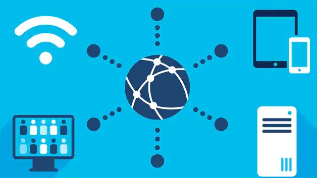

What are Networks?
The dictionary definition of a network is "A group or system of interconnected people or things".
In computers a network is the same a idea but it is technically different since it has a more computer-related aspect.
In computers a network is the communication between computers, or any devices really, but usually it is phones, laptops, iPads,
Nintendo switch, etc. Networks are usually connected by routers but devices on the same network can also be connected via
ethernet cable, and connect to a Wi-Fi network.
